NOVETECH / Produkt
Produkt końcowy
Substrat organiczno-mineralny jest sypki, niehigroskopijny i bezwonny. Stanowi surowiec do produkcji skoncentrowanych nawozów organicznych i polepszaczy gleb zdegradowanych.
Skład produktu
Zastosowanie
fosforu w każdej tonie produktu. Fosforyty są na unijnej liście surowców krytycznych, a Europa importuje je niemal w całości. Zamknięcie obiegu składników odżywczych z osadów zmniejsza zależność od nawozów mineralnych.
Podany skład opiera się na dokumentacji technicznej technologii. Przed wprowadzeniem na rynek na Słowacji produkt zostanie certyfikowany zgodnie z obowiązującymi przepisami o nawozach i o stosowaniu osadów ściekowych w glebie.
Obieg składników odżywczych
31,8 kg fosforu na tonę
↺ z powrotem do miasta